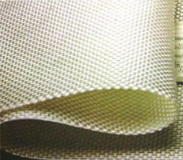

服务热线：0510-87597688

咨询热线
0510-87597688
产品特性
高强度：使用高强度工业丙纶、涤纶、锦纶等合成纤维为原料，具有较高的原始强力。经机织后成规律交织结构。综合承载能力进一步提高。
耐久性：合成化纤的特点就是不易变性、分解、风化。能长久保持其原有特性。
耐腐蚀：合成化纤一般具有耐酸、耐碱、耐虫蛀、耐霉菌。
透水性：机织物可以有效地控制其结构空隙，以达到一定的透水性。
储运方便：由于重量轻、可按一定要求包装，故运输、储存、施工都很方便，70~-30℃温差变化而质量不受影响。
产品规格及性能参数
项目 | 指标 | |||||||||||
标称断裂强度（KN/m） | 35 | 50 | 65 | 80 | 100 | 120 | 140 | 160 | 180 | 200 | 250 | |
1 | 经向断裂强度/（KN/m） ≥ | 35 | 50 | 65 | 80 | 100 | 120 | 140 | 160 | 180 | 200 | 250 |
2 | 纬向断裂强度/（KN/m） ≥ | |||||||||||
3 | 标准长度对应伸长率/(%) ≤ | 经向35，纬向30 | ||||||||||
4 | CBR顶破强力/（KN） ≥ | 2.0 | 4.0 | 6.0 | 8.0 | 10.5 | 13.0 | 15.5 | 18.0 | 20.5 | 23.0 | 28.0 |
5 | 等效孔径O20(O20)/(mm) | 0.07~0.50 | ||||||||||
6 | 垂直渗透系数/（cm/s） | K×（10-2~10-3）其中：K=1.0~9.9 | ||||||||||
7 | 幅宽偏差/（%） | -0.1 | ||||||||||
8 | 模袋冲灌厚度偏差/（%） | ±8 | ||||||||||
9 | 模袋长、宽偏差/（%） | ±2 | ||||||||||
10 | 缝制强度/（KN/m） ≥ | 标称断裂强度×0.5 | ||||||||||
11 | 经纬向撕破强力/（KN） ≥ | 0.5 | 0.8 | 1.1 | 1.3 | 1.5 | 1.7 | 1.9 | 2.1 | 2.3 | 2.5 | |
3.012 | 单位面积质量偏差/（%） | 140 | 200 | 260 | 320 | 390 | 460 | 530 | 600 | 680 | 760 | 950 |
注1:规格按经向断裂强度，实际表格介于表中相邻规格之间，按线性内插法计算相应考核指标，超出表中范围时，考核指标由供需双方协商决定。 注2：实际断裂强度低于标准强度时，标准强度对应伸长率不作符合性规定。 注3：第7项~第9项和第12项标准值按设计或协议。 | ||||||||||||